Into the 4th day of rebuilding with Claude Code. Started to work on the edgartools and LLM in infrastructure layer overhauling the core of Aperilex. The main thrust was to pivot from generalized analysis to a highly structured, data-driven workflow, which involved a significant refactoring of our data ingestion and LLM orchestration layers.
Wrapping EdgarTools in a Dedicated Service
First, we’ve formalized our SEC data access. We’ve integrated the edgartools library and wrapped it in a clean EdgarService within our infrastructure layer. This gives us a single, reliable interface for fetching and parsing filings. It’s a standard service pattern, but crucial for maintainability. I’ve also updated our internal docs in CLAUDE.md, to enforce using this service via its Context7 Library ID, ensuring we don’t drift back to less reliable data sources like direct web searches.
A Hierarchical, Concurrent LLM Pipeline
The old, monolithic approach is gone from the old project. We’ve implemented a new hierarchical pipeline: analyze_filing -> analyze_section -> analyze_sub_section.
This isn’t just about breaking down the problem. We’re now using asyncio to process a filing’s sections concurrently, which is a massive performance win. The real key, however, is the use of structured Pydantic schemas for the LLM’s response format at each level. We collaborated with Claude on this—it generated the initial schemas based on 10-K/10-Q structures, which I then refined. This gives us strongly-typed, predictable outputs from the LLM, moving us away from unreliable JSON parsing and into a world of dependable data contracts.
Refining the Domain Model to Match
This new, richer data pipeline necessitated a refactoring of our core Analysis domain entity. It’s no longer a simple container for text. The entity now directly reflects the hierarchical structure of the analysis, with clear accessors for executive_summary, section_analyses, and section analysis like risk_factors. The AnalysisType enum was also simplified to better represent our core use cases. The domain model now accurately represents the sophisticated output we’re generating with the generic character in its core. The heavy lifting is done by the LLM, but the this light domain model structure is clear and maintainable.
Working with Claude Code
This has been and probably will be a long-term refining progress. Claude Code has been instrumental in this process, providing insights and suggestions that have shaped our core architecture. The iterative nature of this work means that we’re constantly refining our approach, sometimes it could be a bit frustrating because the context issue of the models (Like one case, Claude even forgot to follow using Context7 MVP to fetch edgartool docs, instead it did web search!), but it’s also incredibly rewarding to see the architecture evolve in real-time with so many iterations hapapening in a short amount of time.
For this particular part of the work, the workflow is as follows:
- Following the Phase Plan: We started with a clear plan in
docs/phases/PHASE_3_DETAILED_PLAN.mdandPHASE.md, which outlined the steps for integrating EdgarTools and refining the LLM pipeline. - Iterative Development: We review the architecture, create mermaid diagram, and then implement the changes in reasonable chunks, like edgartools integration and LLM pipeline adjustments.
- Feedback Loop: After each iteration, we review the changes, review the architecture, write test scripts and let Claude Code analyze the output and new structure, and refine it further based on its feedback.
- Update CLAUDE.md: We update the
CLAUDE.mddocument with the latest changes, whatever we think it’s necessary (coding practices, architecture overview, external references) ensuring that Claude has the most up-to-date context for future sessions. - Continue…: We continue this cycle, refining the architecture and LLM pipeline until we reach a stable, production-ready state.
I think the benefit of this approach is that it allows us to adapt quickly to new insights and requirements, while also maintaining a clear record of our architectural decisions and the rationale behind them. The parallel processing both in system level and detailed layer level have both accelerated our development speed and my learning curve.
The Difficulties and Challenges
The most challenging part of this process has been the constant need to adapt and refine our approach based on new insights from Claude Code. The iterative nature of this work means that we often have to backtrack or rework parts of the architecture, detailed implementation (For instance, after the work for edgar and LLM layers, Claude suggested make the domain layer lighter and generic, sticking to the necessary functions while keeping the infrastructure layer rich it directly interacts with external resources which are constantly-changing. Making the domain layer like filing entity heavy could result in many foundamental restructure in the future once the project is up.) which can be frustrating and overwhelming sometimes as each iteration could involve a lot of information to digest but ultimately leads to a more robust solution.
This process has also been a test for the human as it’s constantly testing the knowledge base and understanding of the software under development especially about the architecture, and the tools features like interaction with LLM, domain knowledge about filings in this case. It requires a deep understanding of both the technical aspects and the business requirements, which can be a lot to juggle at once. But this reminds me of the growing importance as Andrew pointed out in this video of having a good combinatin of domain led product and engineering knowledge, which is essential for building successful software systems in this new era of AI-driven development.
Latest Diagram of the Architecture

The diagram above shows our current architecture with the lightweight domain layer and rich infrastructure layer.